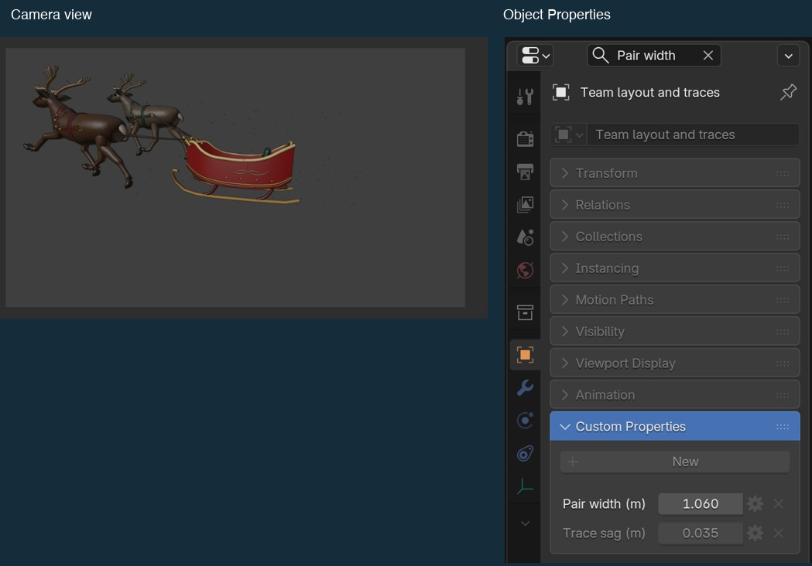

Two reindeer pull the filmed sleigh over a winter valley. Change their formation and prove that each harness still meets its trace as the camera swings around the rider.
Start from the supplied animated animals and tested camera. The practical focuses on placement, motion and compositing. Bring two matching frames to the next critique.
A trace is a line that transmits the pull from a harness to the load. Its two ends must follow different objects as the animals fly.
TodayFind the bow, both reindeer and a trace at each harness.
Explain itAt frame ___ I can trace the pull from ___ to ___.
IN SHORTYou can point to a bow attachment and a harness attachment. The models remain hitched when the camera turns toward the rider.
READ ALOUD
DOCUMENT: Your saved copy of Reindeer-Team.blend beside its three movies. SELECT: Find the bow, both reindeer and a trace at each harness. TOOLS / ROUTE: Object Mode → 3D Viewport → View → Cameras → Active Camera · Timeline current-frame box.
Play the finished movie once. Look at the pairs of narrow traces between the gold-trimmed bow and the animals. Replay it, this time watching the rider. What does the camera keep in view during the turn?
Extract Reindeer-Workshop.zip. Open Reindeer-Team.blend, then File → Save As and name your copy My-Team.blend in the extracted folder. Keep the three movies beside it.
Set the current frame to 60. Render → Render Image (F12). Follow one trace from the bow toward a harness. Use Image → Save As in the Render Result to save width-before.png. Use F11 to return, or close the separate render window.
Scrub the timeline through the turn and back. If a reindeer leaves the camera frame, orbit the 3D viewport to check whether it is still in front of the sleigh. Use View → Cameras → Active Camera to return to the filmed angle.
STEP CHECKLIST
GLOSSARY
Trace: A line connecting the animal’s harness to the vehicle it pulls.
Camera frame: The part of the three-dimensional scene visible through the active camera.
The team from an outside view. Look for the fitting ring on each harness; this is where the trace attaches in the flight shot.
WHYA trace is a line that transmits the pull from a harness to the load. Its two ends must follow different objects as the animals fly.
CHECKYou can point to a bow attachment and a harness attachment. The models remain hitched when the camera turns toward the rider.
FIXA pink background or a missing rider usually means the three movies moved. Use File → External Data → Find Missing Files, choose the extracted folder, save and render again.
WORKED EXAMPLE · DIFFERENT OBJECTPicture a bicycle trailer. The tow arm stays attached to the bicycle even after the cyclist rides out of a camera’s view.
STRETCH (AFTER THE CHECK PASSES)Find a frame where the harness reads clearly in the viewport but poorly through the camera. Explain the difference.
02
Widen the pair and check the harness
One shared control moves both animals while the harness attachments continue to follow them. A screen-space offset would lose that relationship as the camera turns.
TodaySelect the shared team control and alter one value.
Explain itChanging the pair width from ___ to ___ changed the trace angle at ___.
IN SHORTBoth animals change position in the same frame and both traces on each harness remain attached.
READ ALOUD
DOCUMENT: Your saved copy of Reindeer-Team.blend beside its three movies. SELECT: Select the shared team control and alter one value. TOOLS / ROUTE: Outliner → Team layout and traces → Object Properties → Custom Properties → Pair width (m).
Return to frame 60. In the Outliner select Team layout and traces. In Properties choose the orange square for Object Properties, expand Custom Properties, and find Pair width (m).
The opening width is 1.06 m. Predict which way each animal will move. Change it to 1.46 m, press Enter, and leave the spacing control selected. The overall separation increases by 0.40 m; each animal moves 0.20 m away from the centre line.
F12 the same frame. Save width-after.png. Compare the pictures using the bow as a fixed reference. Look for the changed angle of the traces as well as the gap between the harnesses.
Render another frame from the opening. Follow a trace all the way to its harness and check the other end against the bow. Restore 1.06 m and compare, or keep the wider choice in your working copy.
STEP CHECKLIST
GLOSSARY
Rig control: A property that drives related parts of an animated model.
Symmetry: Two coordinated changes of equal distance on opposite sides of a centre line.

Blender Object Properties with Team layout and traces selected. Search for Pair width at the top of the panel to reveal the value; the original width is 1.060 m.A matched camera-frame comparison. Look at the distance between the two harnesses and the angle of the traces at the bow.
WHYOne shared control moves both animals while the harness attachments continue to follow them. A screen-space offset would lose that relationship as the camera turns.
CHECKBoth animals change position in the same frame and both traces on each harness remain attached.
FIXIf one animal moves alone, undo that edit and reselect the shared Team layout and traces control. If the before and after look identical, verify the frame number and press F12 again.
WORKED EXAMPLE · DIFFERENT OBJECTOn a double gate, a shared width control can move two leaves equally while each stays connected to its hinge.
STRETCH (AFTER THE CHECK PASSES)Find the narrowest spacing that still separates the antlers clearly at one camera angle. Test the same value from a second angle.
03
Make a director’s change and prove it
Two versions of the same moment isolate your decision. A second camera angle can reveal antlers or lines that merged in the first.
TodayChoose a legible formation and defend it using the filmed camera.
Explain itI chose ___ m. At frame ___ you can see ___. The trade-off at frame ___ is ___.
IN SHORTYou can show two renders at the same frame, identify the change and point to a second frame where you checked the result.
READ ALOUD
DOCUMENT: Your saved copy of Reindeer-Team.blend beside its three movies. SELECT: Choose a legible formation and defend it using the filmed camera. TOOLS / ROUTE: Current frame → Render Image · Render Result → Image → Save As.
Choose a brief: compact team for the tighter shot, or readable pair for a wide opening. Start with the original spacing and save a reference frame where both animals are visible.
Choose your own width and render that same frame again. Compare the near animal, the far animal, the antlers and the traces. Compare frame 60 with frame 180. Watch which animal begins leaving the frame as the camera turns.
Scrub a short stretch to see the legs cycle while the sleigh and rider stay on their original camera track. For a movie deliverable, follow the 12-frame export exercise with your working copy. Set Start 60, End 71 for this exercise so the team is visible throughout your 12-frame clip.
Keep the two matched stills. In your project notes name the frame, your exact change, what became easier to see, and one trade-off.
Put the reindeer into your existing full-flight composite
In your team project use the Scene dropdown at the top right to select 02 | Team on transparency. At frame 60 render F12. A checkerboard around the animals means the background is transparent. In Render Result use Image → Save As, PNG, colour RGBA. Save as team-60.png.
From the full-flight kit open a working copy of Sleigh-Flight.blend. Select Scene 01, set frame 60, and open the Compositing workspace. Locate the output of A • Sleigh over landscape feeding the first colour input of C • Fit rider inside the sleigh. A already combines the mountains and sled.
Add an Image node (Shift+A, search Image). Open team-60.png. Add an Alpha Over node. Connect A’s Image output to the new Alpha Over node’s Background. Connect team-60.png to its Foreground. Connect its result to the first colour input of C, replacing the direct wire from A. The rider and near rail still feed C’s other colour. Solid sleigh parts already cut holes in the team layer wherever they sit in front of a trace. This placement preserves traces that go in front of the bow. Render frame 60. If you see a black rectangle, check that the saved PNG includes alpha.
A single still tests this frame. The supplied native team project renders the changing animals every frame; use it for the full animated shot.
STEP CHECKLIST
GLOSSARY
Silhouette: The outer shape that tells the viewer what an object is.
Overlap: One shape hiding part of another from the current camera angle.
The team in the filmed camera view. A usable formation must read beside the rider and sleigh from the actual lens angle.
WHYTwo versions of the same moment isolate your decision. A second camera angle can reveal antlers or lines that merged in the first.
CHECKYou can show two renders at the same frame, identify the change and point to a second frame where you checked the result.
FIXIf the animals have left the shot, keep the recorded camera and select a different frame in your comparison. If your choice looks good in only one frame, test a smaller change.
WORKED EXAMPLE · DIFFERENT OBJECTA figure skater can be visible in a wide camera and disappear behind a partner in a close angle. Both shots can describe the same movement.
STRETCH (AFTER THE CHECK PASSES)Explain how cutting to an outside view would change what a viewer knows about the team.